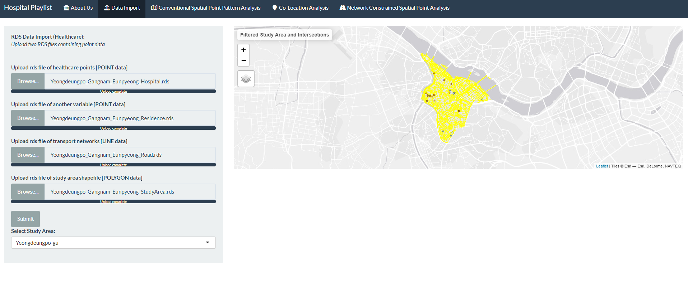
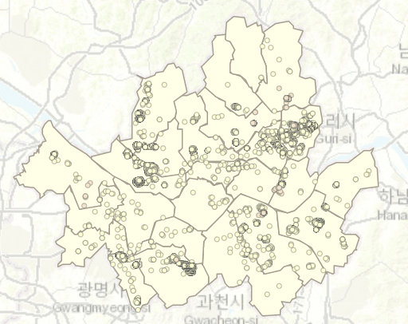
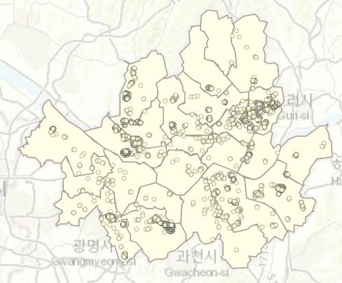
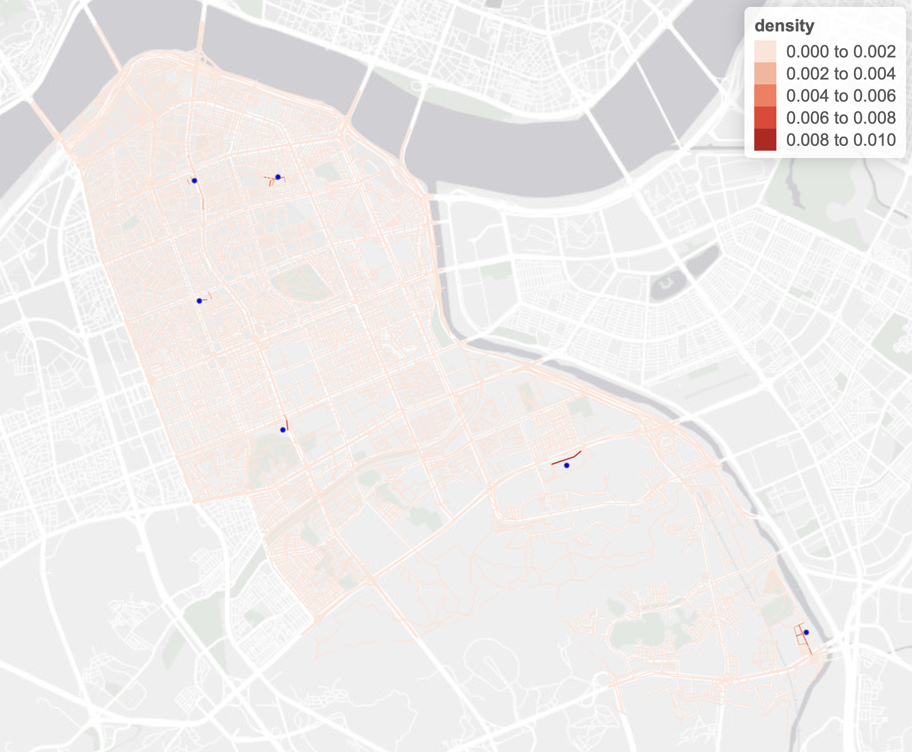
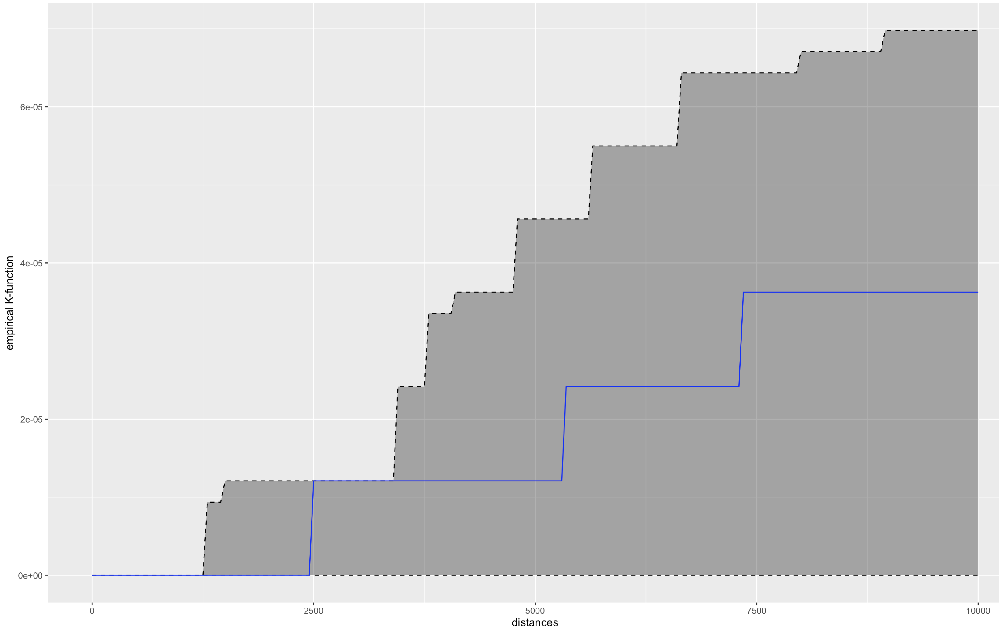
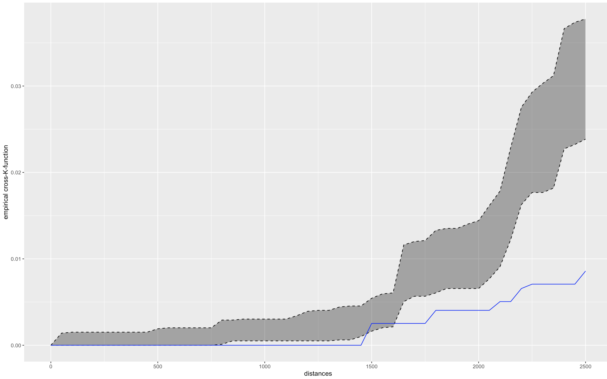

Show code
tmap_mode('view')
tm_shape(lixels)+
tm_lines(col="density",
palette = "Reds") +
tm_shape(Hospital_Points) +
tm_dots(col = "blue",
size =0.01)April 6, 2023
April 15, 2023
The availability of healthcare facilities, such as hospitals, is essential to guarantee equal access to medical services for all individuals, irrespective of their socio-economic status or geographical location. In South Korea, there is mounting evidence that suggests the presence of inequalities in access to hospitals or clinics, with certain populations and regions facing greater challenges in obtaining necessary healthcare services. The primary objective of this study is to identify the regions in South Korea that have limited access to hospitals. Our analysis of spatial data has allowed us to detect patterns and trends in hospital and clinic accessibility. We have come out with a user-friendly application designed to bridge the gap between geospatial analysis and ease of use.
The platform is specifically tailored to support non-technical users with a particular type of geospatial analysis called Point Pattern Analysis. Our application offers support for two types of Point Pattern Analysis: Spatial Point Patterns Analysis and Network-Constrained Point Patterns Analysis.
Spatial Point Patterns Analysis helps users determine whether the point distribution in their dataset resembles spatial randomness or exhibits a regular or clustered pattern. It can also identify dependencies between two input dataset point distributions.
Network-Constrained Point Patterns Analysis helps users identify whether the distribution of spatial point events occurring on or alongside networks shows spatial randomness or a regular/clustered pattern.
To allow the end-user to use our model to identify areas with low healthcare accessibility.
Developed an application to illustrate different scenarios of clinical and healthcare setting to aid improving healthcare accessibility in South Korea.
Show the difference between the conventional and Network Constrained Spatial Point Analysis
Serve as an educational tool on the different types of Spatial Point analysis.

Given a kernel, a smaller bandwidth tends to lead to an undersmoothed density estimate that may contain many spurious noises (i.e., peaks and valleys), and a larger bandwidth tends to result in an oversmoothed density estimate that may hide some interesting underlying structure. Therefore, choosing an optimal bandwidth for a dataset is important.
Based on the results, we have decided to choose bw.ppl because it seems to be the most optimal among the rest of the bandwidth. We will also use gaussian in this project because it is most recommended among others.
With the kernel density map, denser areas with a heavier distribution of clinics and hospital are easily spotted.
We can see from application that gangnam-gu is heavily concentrated for clinics whereas for hospital, we can see that there are 2 areas that is highly concentrated, Jung-gu and yeongdeungpo-gu.
This is because the kernel density z-estimate helps to smooth out the points in a given area - a much larger ‘smoothing effect’ than point density, which in turn is helped by the visualisation that kernel density maps have: its range for distributions concentrations is clearly indicated by the gradient of colour - in my case, ranging from yellow to brown for the different bands. Compare this against the individual points in a point map (on the left), which at most shows concentration of certain areas, but makes it hard for the viewer to comprehensively compare the distributions of different regions.
In this application, we have used K and L function.
K function is a statistical method used to test for clustering or dispersion of points in a spatial region. It compares the observed distribution of points to a null model of complete spatial randomness.
We have run the 39 number trials (nsim) in the code chunk and based on the results we have observed that K(r) is far above the K(theo) as well as the envelope - indicating that clinics in Seoul area are very clustered as compared to hospital. Hence, we reject the null hypothesis that both clinic and hospital in Seoul area are randomly distributed at 95% confident interval
L function is another statistical method used to test for clustering or dispersion of points in a spatial region. It measures the expected number of points within a certain distance of each other and compares it to a null model of complete spatial randomness.
If the black line representing the observed L-function is above the envelope, it suggests that the point pattern exhibits clustering. In other words, the observed number of points within a certain distance of each other is higher than what we would expect if the points were randomly distributed in the region. Based on the results, for Hospital at Seoul is shown to be more than 0, but lies within the randomization envelope for distances above 5km. This shows that there is no statistically significant clustering and is randomly distributed at distances above 5km.
Co-location analysis between residential buildings and Hospitals in Seoul

Co-location analysis between residential buildings and Clinics in Seoul

LCLQ values can be used to determine the spatial relationship between the location of clinics and residential buildings. In this case, point-based approach is used. For points marked with the value 1 (in yellow), it indicates that there is a hospital/clinic as a nearest neighbour. Those with no access or low access to clinics/hospitals, the points are displayed in pink.
LCLQ also adopts distance ranks adaptive bandwidth, and ensures that exactly the same number of points is involved in the estimation of LCLQ at each marked point, returning more robust and reliable results.
Given the high rate of healthcare needed for the Korean populations, accessibility to hospitals and clinics are vital especially during needs of emergencies. Hence, with this colocation analysis, residents will be able to add this consideration before deciding their area of residence. In contrast, staying within the vicinity of hospitals and clinics can have cons as well, such as having heavier traffic and presence of higher noise levels. For infectious diseases, the chances of spreading will be higher. However, if benefits outweigh cons, it will still be more ideal to have better access to medical facilities.
To illustrate this method, we decided to narrow down to the Gu level. We used Gangnam-Gu as our study area in this research paper.
In calculating the kernel density, we used the “simple” method to calculate the network kernal density estimate.

The interactive map above effectively reveals road segments (darker color) with relatively higher density of hospitals than road segments with relatively lower density of hospitals (lighter color).
Null hypothesis:
The observed spatial point events (i.e distribution of hospitals) are uniformly distributed over a street network in Gangnam-Gu Area.

The blue line is the empirical network K-function of the hospital points in Gangnam-Gu. The gray envelop represents the results of the 50 simulations in the interval 2.5% - 97.5%. We notice that the blue line is within the gray envelope suggesting that the observed spatial point events (distribution of hospitals) are uniformly distributed over a street network in Gangnam-Gu Area.
Null Hypothesis: The two types of points resemble random distribution and are independent of each other.
Seeing that there are only a few hospital within Gangnam-Gu, the K-cross function results is to be expected and as such, the K-cross function helps to identify variables that may be related to the hospital locations. For example, we used residential points so as to see whether residents in Gangnam-Gu are clustered near the hospital points. This helps us identify whether there is spatial dependence between hospitals and residence.

From the plot above, we see that from 0 to 750 and 950 to 1200, we cannot reject the null hypothesis and thus the two types of points are independent from each other. However, 750 to 950 and 1200 and above, we can reject the null hypothesis and as it is below the grey envelope, we can conclude that the two types of points resemble repulsion patterns, suggesting dispersion.
If the observed K is outside the grey envelope, we can reject the null hypothesis.
If the observed K is above, we can conclude the two types of points resemble attraction patterns, suggesting clustering.
If it is below, we can conclude the two types of points resemble random distribution and are independent from each other.
To improve our scope of the research if we were given the time, we can further expand the analysis to whole of Korea, to find out the areas who have inadequate access to medical facilities currently and the government of Korea can consider improving the medical accessibility in those areas in order to increase the livability and quality of lives of the residents there. We can also conduct further data collection by categorising the type of hospitals and clinics and classifying them in terms of their specialisation, so residents can select which hospitals or clinics to visit to tailor to their needs.